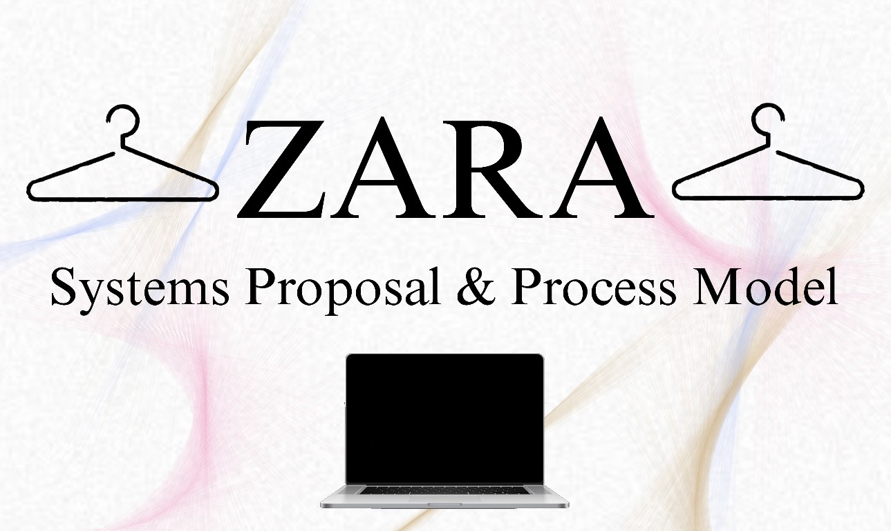
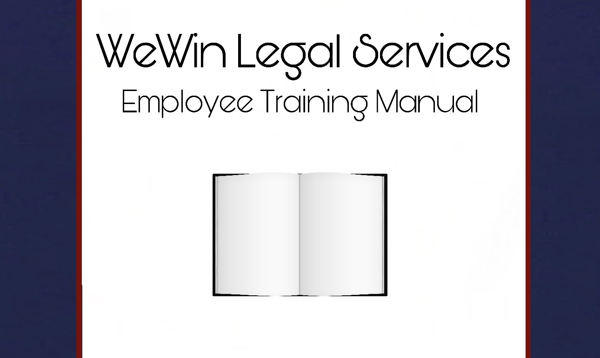
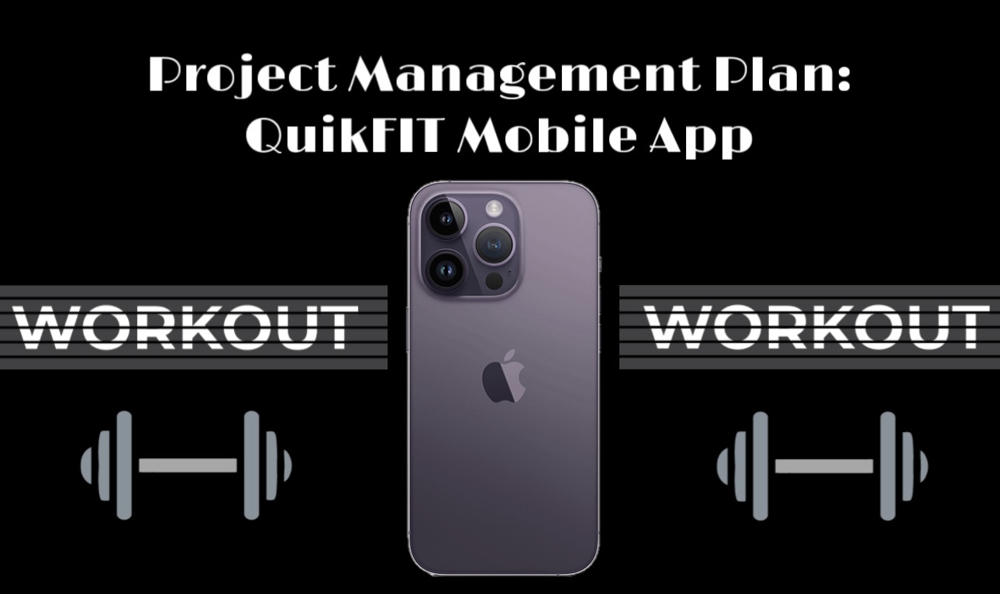

Systems Proposal & Process Model for ZARA

A systems redesign proposal for ZARA's e-commerce site, addressing UX and database issues, like color variants showing up as separate listings instead of one grouped product page. The plan restructures the database, redesigns the interface with interactive swatches, and follows the SDLC through database updates, UI changes, and testing.
View Full Paper (PDF)
Employee Training Manual for Database Management (WeWin Legal Services)

A training manual for managing WeWin Legal Services' relational database, covering database fundamentals, SQL, and security for handling sensitive case data. Includes recommendations for tools like Power BI and Tableau, as well as guidance on database design, normalization, and long-term maintenance.
View Full Manual (PDF)
Project Management Plan: QuikFIT Mobile App

A full project management plan for launching QuikFIT, a fitness tracking app, on a 20-week timeline and $220,000 budget. Covers team structure, milestones, a PERT chart for task dependencies, and plans for managing risk, quality, and cost throughout the project.
View Full Plan (PDF)